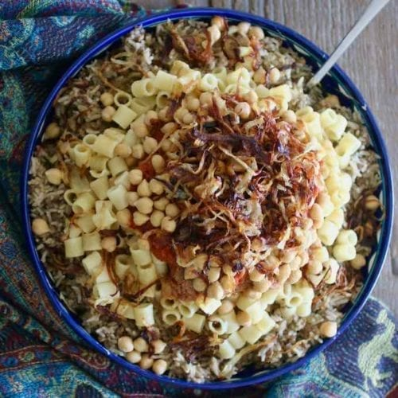

Koshary

Description
it is widely considered Egypt's national dish. Rice, lentils (black or brown), chickpeas and pasta are cooked individually,
then tossed together and topped with cumin-scented tomato sauce and crunchy fried onions.
Ingredients
- Rice: Use Egyptian rice (also known as Calrose short-grain rice).
- Brown Lentils: I recommend using brown lentils for the right koshari experience; however, green lentils can be substituted.
- Onions:You can use white onion, brown onion, yellow onion, sweet onion, or red onion.
Steps
- Boil the chickpeas with cumin while preparing the fried onions.
- Chop the onions into thin circles. Allow the onions tossed in flour to rest for 30 minutes prior to frying.
- Add the soaked brown lentils and water to the cooked onions. Bring to a boil for 10 minutes, or until the lentils are soft.